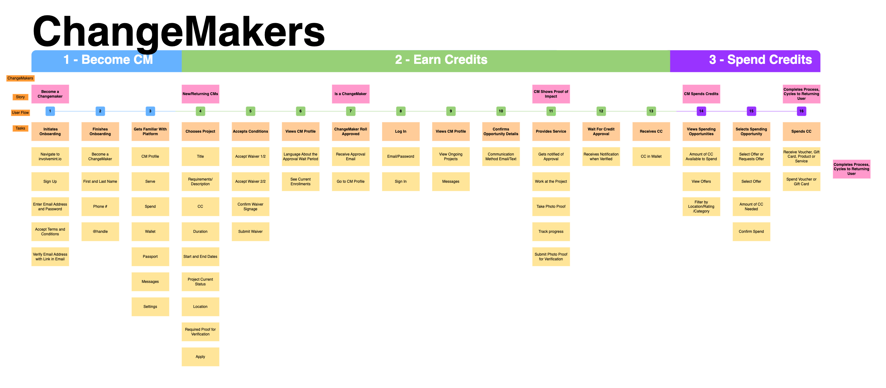

1. Evaluation of Existing Interface
My mentor, Dr. Dmitriy Babichenko, had created a bare-bones interface that incorporated the key ideas of using tags and colored nodes. However, challenges arose from overlapping tags, impacting the readability of content categorization and suggesting the need for improved usability in tag organization.

User flow representing all of the actions taken by a user during the onboarding process of the web or mobile app.
2. Comparison with Other Knowledge-Based Software
Analyzing the usability of other softwares that use a graph-based or knowledge-based format (Obsidian and Tinderbox) I was able to compare and contrast their features and consider what designs I wanted to implement for the StoryWorlds project. Obsidian's intuitive Markdown-based editor and graph-based visualization, as well as Tinderbox's unique spatial organization features, helped me identify best practices and refine my own interface design.
Obsidian Analysis:
In this study, we aimed to investigate user preferences regarding two different credit verification methods for tracking progress: taking a before and after photo versus using a timer to clock in and out along with before and after photos. The study was conducted through two distinct tests, Test A and Test B, each employing different sequences of actions to assess user experiences and preferences.
Test A
Test B
- Users chose an activity.
- Users were prompted to take a before photo.
- Users completed the activity.
- Users took an after photo to document their progress.
- Users submitted the credit to be verified.